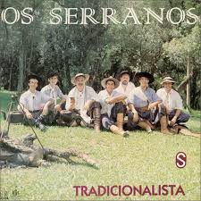

Correu notícia de um gaúcho
Lá na estância do paredão
Tinha um cavalo tordilho negro
Foi mal domado, ficou redomão
Este gaúcho dono do pingo
Desafiava qualquer peão
Dava o tordilho negro de presente
Pra quem montasse sem cair no chão
Eu fui criado na lida de campo
Não acredito em assombração
Fui na estância topar o desafio
Correu o boato na população
Era um domingo, clareava o dia
Puxei o pingo e o povo reuniu
Joguei os trastes no lombo do taura
Murchou a orelha, tive um arrepio
Botei a ponta da bota no estribo
Algum gaiato por perto sorriu
Ainda disseram comigo eram oito
Que boleou a perna, montou e caiu
Saltei pro lombo e gritei pro povo
Este será o último desafio
Tordilho negro berrava na espora
Por 20 horas, ninguém mais nos viu
Mais de uma légua, o pingo corcoveou
Manchou de sangue a espora prateada
Anoiteceu o povo pelo campo
Procurando o morto pela invernada
Compraram vela, fizeram o caixão
A minha alma estava encomendada
À meia-noite, mais de mil pessoas
Deixaram da busca, desacorçoadas
Dali a pouco, ouviram o tropel
Olharam o campo, noite enluarada
Eu vinha vindo no tordilho negro
Feliz, saboreando a marcha troteada
Boleei a perna na frente do povo
Deixei a rédea arrastar no capim
Banhado em suor o tordilho negro
Ficou pastando ao redor de mim
Tinha uma prenda no meio do povo
Muito gaúcha, eu falei assim
Venha provar a marcha do tordilho
Faça o favor, monte no selim
Andou no pingo mais de meia hora
Deu-me uma rosa lá do seu jardim
Levei pra casa o meu tordilho negro
É mais uma história que chega no fim
